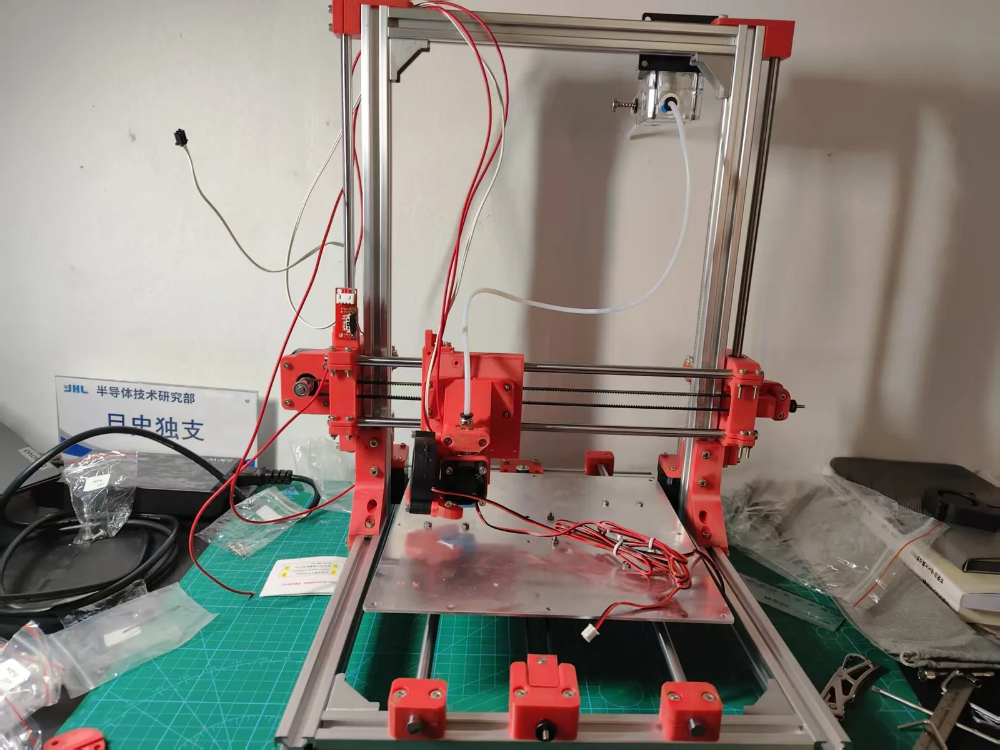
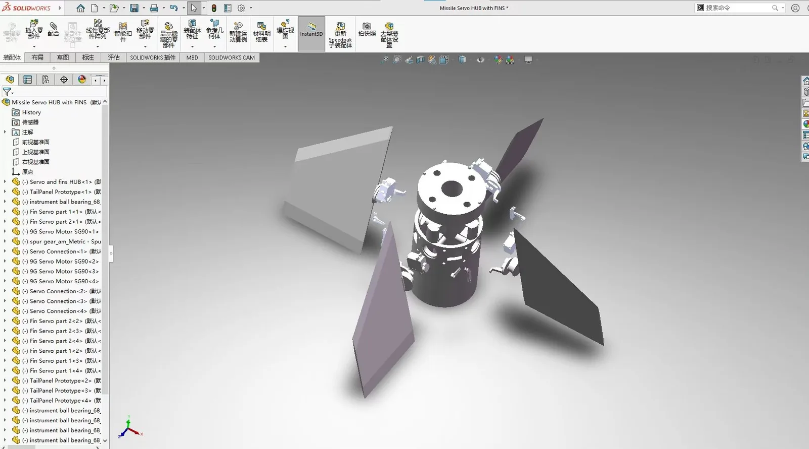
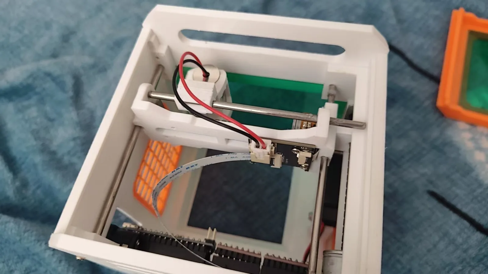

200+
火箭相关实验
16-17
真实发射记录
2 台
3D 打印设备经验
AI
工具与 Agent 实践
ORDERS / 06.13—10.02
成交数据
从 2026 年 6 月 13 日到 10 月 2 日，累计成交 117+ 单、净利润 9,166+ 元。折线表示累计数据，单日最高不超过 5 单。
累计订单
117+
单
累计净利润
9,166+
元
单日最高
5
单
累计净利润
¥9,166+01 / ABOUT
关于我
一个喜欢把动手实践、数字工具和真实项目连接起来的年轻人。
我是旦史独支，也可以叫我 David。现在是一名中国学生。我的兴趣横跨实体制造和数字工具，喜欢从零开始搭东西，也喜欢把一个模糊想法一步步变成原型。
我做过 3D 打印、建模、火箭实验、AI 工具和小型自动化项目，也在尝试把地方文化、非遗元素和 3D 建模结合起来。对我来说，技术不只是屏幕里的东西，它应该能落到材料、结构和真实场景里。
先预估，再动手
火箭实验反复证明，没有预估和记录，直觉就会变成无法复盘的运气。
失败也是数据
尺寸、参数、错误和反馈都保留下来，下一次迭代才有依据。
文化先尊重语境
做文化类项目时，先确认背景、使用场景和授权边界，再谈建模与打印。
3D 设计与建模
草图、照片、尺寸转模型，修模、结构优化与打印准备。
实体制造
FDM 打印、公差控制、支撑策略、材料选择与装配验证。
AI 工具链
Agent 安装、API 接入、自动化流程与运行排错。
文化数字化
地方纹样、器物、建筑元素的 3D 样本、展示模型与文创原型。
LIVE / AUTOPLAY
正在推进的方向
自动轮播四个重点方向，也可以随时暂停或手动切换。
02 / PROJECTS
我在做什么
从实体制造到 AI 工具，每个方向都尽量留下作品、数据和可复盘的记录。
01

3D 打印与建模
自己装过开源 3D 打印机，也使用拓竹 A1。做过火箭部件、小物件、摆摊商品和非遗打印样本，正在从“会打印”走向“会设计、会改结构”。
- 从草图、照片和尺寸开始建模
- 支持代打、修模和简单定制
- 关注公差、支撑、材料与强度
02
火箭实验
累计约 200 次大小实验，真实发射约 16 到 17 枚。现在更重视安全、记录、预估和失败分析，而不是只看一次成功。
- 试车、部件测试与发射记录
- 先写预估，再对照实际结果
- 安全清单优先于性能追求
03
文化与非遗 × 3D 打印
尝试把地方纹样、器物、建筑和节日元素转成 3D 模型与打印样本，让文化物件有新的展示、教学和文创表达方式。
- 纹样、器物与建筑模型化
- 打印样本、展示模型与文创原型
- 先确认文化背景与授权边界
04
AI 工具与小项目
安装和配置 Codex 等 AI 编程工具，调用 API，做过公众号小工具和小型自动化。也在学习把 AI 变成真正能交付的作品。
- Agent 环境与 API 配置
- 公众号小工具和自动化尝试
- 从小功能走向完整作品
03 / SERVICES
我能提供什么
先说明需求、材料和交付要求，再判断能不能做、多久能做、怎么报价。
01
3D 建模 / 代打 / 定制
根据草图、照片、尺寸或想法建模，提供打印建议、材料选择、简单修模和小批量代打。
- STL / STEP / 3MF 文件或实物成品
- 结构、尺寸和打印方向建议
- 按数量、材料和精度报价
02
AI Agent 安装指导
协助配置运行环境、依赖、API 和常用工具，指导启动、调用和基础排错。不提供未授权软件。
- 环境检查与依赖配置
- API、工具与启动流程指导
- 常见错误排查与使用说明
03
小项目原型
从需求拆解、结构设计到打印验证，适合小装置、展示模型、简单自动化和课程项目原型。
- 需求拆解和原型方案
- 结构设计、打印与装配验证
- 迭代记录和交付说明
04
文化相关设计
围绕地方纹样、器物、建筑和节日元素做 3D 样本、展示模型、文创原型与数字化整理。
- 文化元素整理与数字化建模
- 展示模型、打印样本和文创原型
- 按场景确认合作与使用边界
04 / PROCESS
合作流程
先把需求讲清楚，再决定能不能接，避免双方浪费时间。
-
01
说明需求
提供参考图、尺寸、用途、数量、期望时间和预算范围。
-
02
确认可行性
判断建模、材料、打印强度、成本和交付风险。
-
03
报价与打样
确认方案后报价，需要时先做小样或结构验证。
-
04
交付与记录
交付成品或文件，并保留尺寸、参数和反馈，方便迭代。
05 / FAQ
常见问题
可以只代打，不建模吗？
可以。你需要提供可打印的 STL、STEP 或 3MF 文件，并说明尺寸、材料、颜色和数量。
只有照片或草图，可以建模吗？
可以先判断。照片适合做外形参考，但精确结构还需要尺寸、多角度照片或简单草图。
AI Agent 安装提供什么？
提供安装指导、环境配置、API 和常用工具接入、运行排错。不会提供或传播未授权软件。
文化类项目怎么做？
先确认文化背景、使用场景和授权边界，再做数字化、建模和打印样本，避免脱离语境地复制。
代打需要提供哪些信息？
模型文件、尺寸、数量、材料、颜色、强度和期望交付时间。没有文件时，可以先判断能否建模。
小型原型通常怎么做？
先把目标拆成可验证的小模块，再做结构、打印和装配测试。比起一次做完整成品，先验证关键问题更可靠。
VISUAL / ARCHIVE
视觉档案
设备、结构和航天参考图，用来记录制造过程和审美来源。


06 / CONTACT
有想法，就先聊清楚
可以直接通过 QQ 邮箱联系，也可以扫描企业微信名片添加。下面这段文字可以作为初次沟通模板。
QQ 邮箱
3539969856@qq.com
微信号
ROCKETBOYDZ
合作咨询模板
你好，我想咨询一个项目。需求类型是：3D 建模 / 代打 / AI Agent 安装 / 小项目原型 / 文化相关设计。我手上有参考图或尺寸，期望交付时间是【填写】，预算范围是【填写】。方便的话请告诉我下一步需要准备什么。
- 参考图片、草图或现有模型文件
- 尺寸、数量、用途和材料要求
- 期望时间、预算范围和交付形式
合作说明
- 客户文件只用于当前项目，不擅自公开或转交第三方。
- 文化素材使用前先确认背景和授权边界。
- 客户作品展示前会先确认许可。